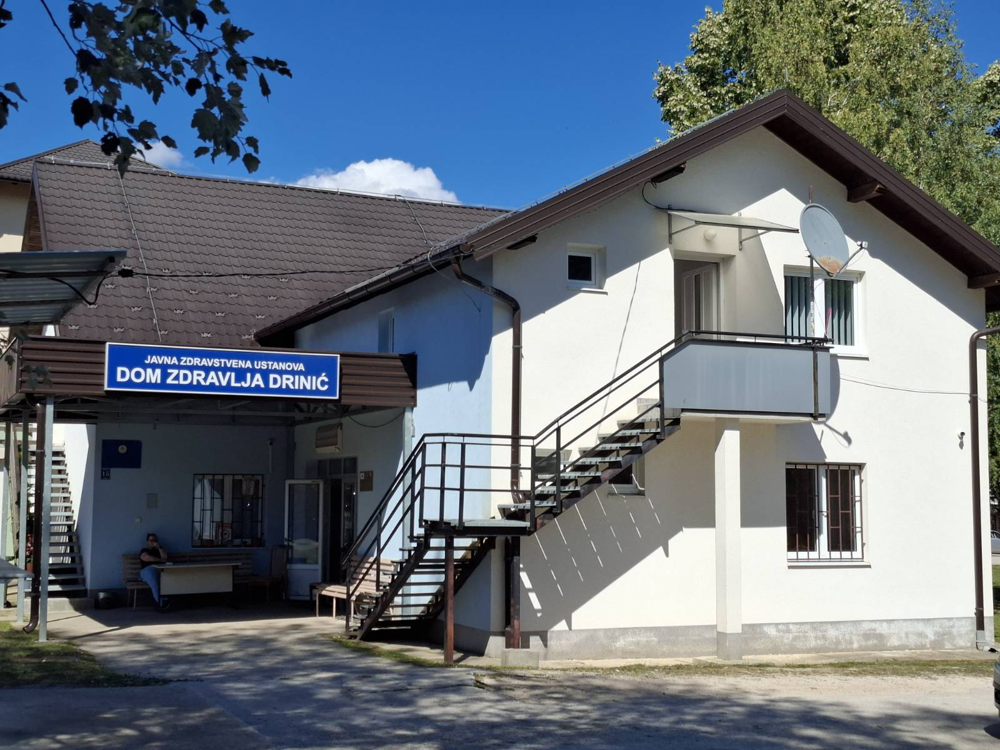

About us
The Public Health Center Drinić (JZU DZ Drinić) was established in 2000, in the newly formed municipality of Petrovac, with its headquarters in Drinić.
Since its establishment, it has provided primary health care coverage for the area of the municipality of Petrovac and parts of the surrounding municipalities of Bosanski Petrovac and Drvar.
There is one registered family medicine team with approximately 1,900 primary health care users.
The institution employs 8 workers who work in the family medicine clinic, laboratory, dentistry, economic and financial affairs, as well as in the technical service.
